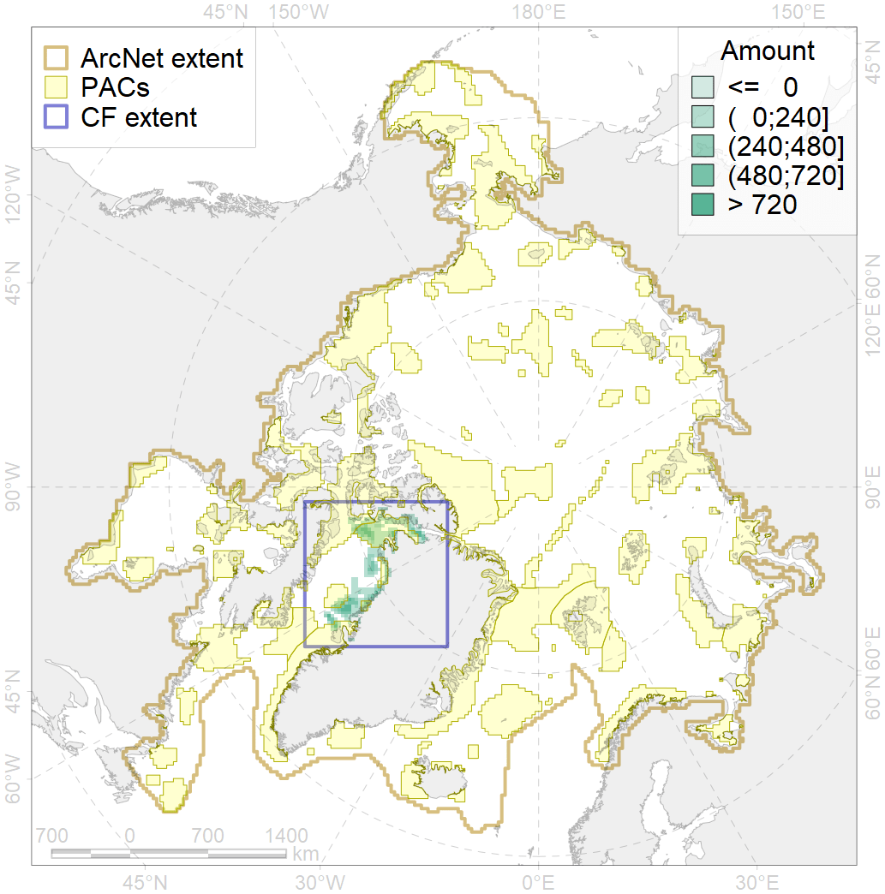
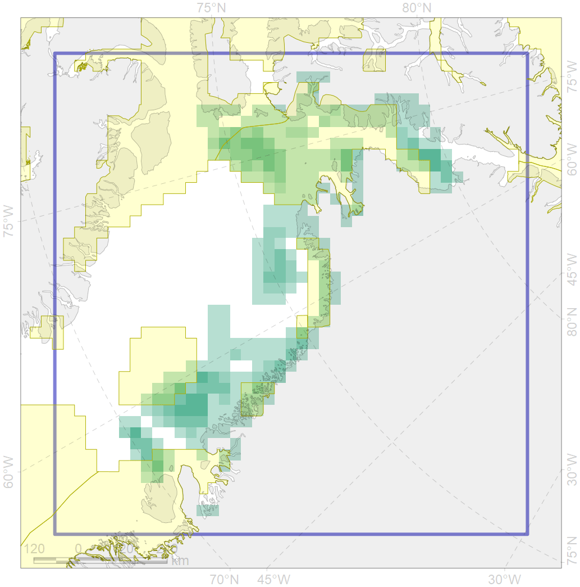

7149

| CF code | 7149 |
| CF name | III.3.1.1. NW Greenland medium and low profile shelf |
| Time Period | At least last 100 years |
| Source(s) | Harris et al., 2014; Carmack, Wassmann, 2006 |
| Seasonality | 1-12 |
| Depth Horizon | Sea floor |
| Methodology | Data obtained from the literature |
| Use Restrictions | Open access |
| Author Name | V. Spiridonov, W. Merritt |
| Notes | |
| Scenario’s Target | 0.1109018 |
| Target Achievement | 0.445 (Scenario: 401.2%) |
| PAC | Share of the Total Amount within the PAC | Share of the Target Achievement for the ArcNet | PAC’s Contribution to the Target Achievement |
|---|---|---|---|
| 44 | 3.2%5.2% | 21.4%22.9% | 5.3%5.7% |
| 47 | 3.8% | 29.3% | 7.3% |
| 48 | 3.0%3.1% | 20.0%20.2% | 5.0%5.0% |
| 49 | 3.9%4.0% | 30.5%30.7% | 7.6%7.6% |
| 51 | 27.7%30.2% | 239.9%260.3% | 59.8%64.9% |
| 52 | 3.3%6.1% | 30.0%54.7% | 7.5%13.6% |
| inner | 45.0%52.4% | 371.2%418.1% | 92.5%104.2% |
| outer | 55.0%60.1% | 30.0%61.4% | 7.5%15.3% |
| † supplement values are for area consistence whereas principal values are for Accenter compatible gridded stats |